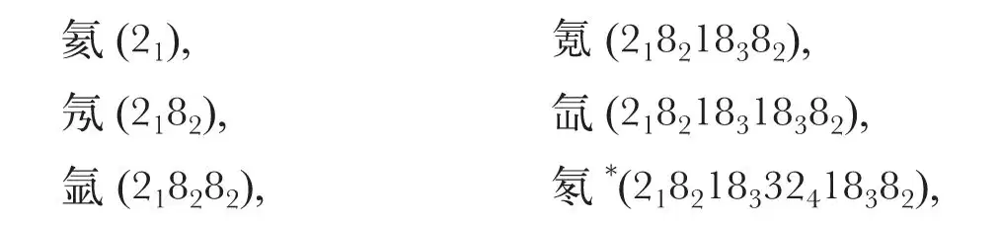

英文
英文玻尔
编者按
在这篇文章中丹麦物理学家尼尔斯·玻尔反复思索是否可以用新的量子理论来解释原子的性质。物理学家们猜测周期表中的元素分组可能在某种程度上反映了核外电子的排布情况，但没有说明这种排布模式是如何形成的。玻尔指出，他的氢原子模型可以说明电子为什么会填入不同的壳层。玻尔说，周期表中大部分元素的核外电子都可以被认为是连续填充这些壳层的。充满电子的壳层结构比较稳定，因而表现出化学反应上的惰性，如氦、氩等惰性气体。虽然玻尔的模型已经被数学上更为严密的量子理论取代，但他对核外电子排布的大部分定性描述至今仍然有效。 英文
诺曼·坎贝尔博士在去年11月25日写给《自然》的信中，谈到有关原子中电子运动和排布的假说是否可能保持前后一致的问题，这关系到量子理论能否作为原子结构的核心理论对一系列元素的光谱进行解释的问题，为了建立一个能够解释元素其他物理化学性质的原子组成理论，人们在最近的研究中提出了许多差异很大的假设。坎贝尔博士的观点令人振奋，他提出，表面上的矛盾可能不是真的，而是因为量子理论的原理具有表观化的特征，其对原子构成的描述用于解释不同的现象时可能使用完全不同的形式。他把人们对这个问题的注意力转向了所谓的“对应原理”，尽管普通电磁辐射理论与量子理论存在本质上的不同，但在建立了“对应原理”之后，就可能可以用经典辐射理论的结论推导出量子力学理论中的某些推论。 英文
必须承认，我们至今尚未建立起一个完整的理论来详细地描述原子系统发射辐射和吸收辐射的机制，我当然同意“对应原理”像所有其他的量子理论概念一样，在某种意义上也带有形式化的特征。但是，从另一个角度上说，现在已经有可能在一个原子系统——根据基于假设原子中的粒子做某种形式的运动的量子理论推导得到——的发射光谱和由同样类型的运动产生的放射物的构成之间建立一种紧密的关系，根据普通的电磁学理论，我认为它提供了一个论点，这个论点支持一种与坎贝尔博士的建议几乎完全不相符的光谱理论假说。相反，如果我们承认用量子理论解释光谱是合理的，那么“对应原理”在解释元素的系列光谱以及元素的其他物理化学性质方面也许能够得出最可信的推论；在这封信中，我将简单地介绍当我们在试图把量子理论应用于原子核系统以构建一个普适的原子组成理论时，是如何广泛地运用这一原则来克服目前遇到的主要难题的。 英文
一系列原子组成理论的共性是都在极力寻找电子的排列和运动规律以解释元素的化学性质为什么会随原子序数的增加而发生周期性变化，正如众所周知的周期率明确指出的那样。周期率使人们猜想，原子中的电子可以被分为不同的组，每一组包括的电子数等于元素序列的一个周期。在早先试图明确描述各组中电子排布和运动的理论中，人们假设每一组中的电子在任一时刻都以相等的角间距排布在以原子核为中心的圆形轨道上，而在后来的理论中，这一简单的假设被新的假设取代，即认为各组中的电子排布不具有这种单一的轴对称，但在空间上则表现出更高程度的对称。例如，假设在电子运动的任一时刻它们的排布呈多面体对称。但是，所有这些理论都难以解释为什么通过原子核束缚电子而生成原子的过程中会出现这样的排布，也不能解释当外部介质暂时侵入时为什么原子的结构在原始排列重组后依然保持基本稳定。如果我们设想，除了由于所带电荷产生的吸引力或排斥力之外，粒子之间再无其他作用力，那么这样的解释就明确要求在原子中不同组的电子之间必须存在一种紧密的相互作用或“耦合”，这完全不同于认为各组电子运动轨道之间的距离也许远到足以使每一组电子单独形成原子的一个“壳层”的假设，耦合效应对外层电子的影响主要是部分地抵消由于电子带负电荷而受到的来自原子核的吸引力。 英文
上述论点被认为涉及到核原子的基本特征，与量子理论的特殊性没有关系，人们把量子理论引入原子体系的初衷是希望它能够对原子的稳定性给出合理的解释。根据量子理论，原子体系中存在若干种不同的状态，即所谓的“定态”，电子在定态中的运动不能用一般理论来解释，在某一段时间内，原子可以以任意速率运动，但不会以辐射方式释放能量。只有在两个定态之间发生跃迁时原子才会发射特征辐射，而这种跃迁过程不能用一般理论来描述，更不用说利用普通的电磁理论根据运动规律计算发射的特征辐射了。与普通电磁理论形成鲜明的对照，量子理论假设跃迁通常伴随着发出单色辐射的过程，频率只取决于两个状态之间的能量差。最初应用量子理论解决原子中的问题是从解释简单的氢原子光谱开始的，因为氢原子不需要先验地确定定态，现在人们根据特定力学运动的类别已经得到了确定定态的系统化方法，因而量子力学理论已经被广泛地用于解决原子中的问题。虽然通过这种方式我们已经获得了许多差异很大的对光谱结果的详细解释，但只局限于研究原子中与单电子运动有关的现象。对于包括几个电子的原子，则由于确定定态的方法不能够排除在原子内不同组（或称壳层）中选择电子数量及其排布时的随意性，而无法得到明确的解释。实际上，这导致的唯一的直接后果是：原子中每个电子的运动情况都可以用一个在中心力场中运动的粒子的一个定态来近似，这种近似只限于用索末菲关于氢线精细结构理论中的圆形或椭圆形轨道来描述定态。但在引入了“对应原理”之后，人们就有了消除随意性的方法，这表明量子理论的发展趋势不仅在于建立一套正式的规则以确定原子体系中的定态和在这些定态之间发生跃迁时发射的辐射频率，而且还要努力总结出合理的辐射电磁理论法则，这一法则对不连续特性的解释必须能够说明原子是稳定的。 英文
在这里不用详述“对应原理”的具体内容，为了解决现在的矛盾，也许可以认为它足以在原子体系不同定态的运动特征与两个定态发生跃迁的可能性之间建立很强的相关性，因而为用理论检验一个原子形成或重组时可能发生的过程提供了依据。例如，根据这个原理我们得出的直接结论是：在实际原子中每一组电子的排布都不可能是环形也都不是多边形对称，因为形成这样的排布要求各组中所有的电子都必须在开始的时候同时被原子束缚住。恰恰相反，我们有必要在原子中寻找使电子有可能是一个一个连续地被原子束缚住的排布方式，我们也许能在元素系列发射光谱中观察到这个过程的最后阶段。现在利用“对应原理”，我们对该过程的描述不仅能够精确地解析这些光谱的结构，还能明确地提出原子中电子的排布方式，既适合解释高频光谱，又能说明元素的化学性质。因此从考虑定态之间可能出现的跃迁入手，根据束缚每一个电子的不同步骤，我们首先假设只有最开始的2个电子在可以被称为1–量子的轨道上运动，1–量子轨道近似于一个中心体系的定态，即一个电子绕一个原子核旋转的体系的基准状态。在最开始的2个电子之后被束缚的电子将不能通过两个定态之间的跃迁进入原子中与最开始的2个电子等同的位置，但将在可以被称作多量子的轨道上运动，相当于一个中心体系中的其他定态。 英文
最近的一些理论已经假定过这样的多量子轨道存在于正常状态的原子中，如在索末菲关于高频光谱的论文中，以及在朗代关于原子大小和晶体结构的著作中；但正是对应原理第一次为这些推论提供了合理的理论依据，也为在最开始的2个电子之后被束缚的电子轨道如何分配这一问题提供了解答。因此通过对束缚过程的进一步研究，对应原理提出了一个简单的规则，认为这些电子分组排列的方式也是元素化学性质随原子序数递增而表现出周期性的反映。实际上，如果我们考虑的是大量电子被一个带较多正电荷的原子核束缚，该规则指出：最开始的2个电子位于1–量子轨道，后8个电子被束缚于2–量子轨道，然后18个电子在3–量子轨道，再后面32个电子位于4–量子轨道。 英文
尽管各组中电子轨道的排列呈现出惊人的空间对称性，但不能因此而认为这些组在原子构造上显示出大家普遍接受的简单壳层结构。首先，该规则认为，同一壳层中的电子并不都扮演同样的角色，总量子数相等的多量子轨道有不同的类型，对应于这些不同的类型，电子又被归入不同的子壳层，子壳层也是描绘电子在中心力场中运动的定态。因此，根据一个体系中存在2类2–量子轨道，3类3–量子轨道，以此类推，我们可以得到这样的结论——上面提到的8电子壳层由2个4电子子壳层构成，18电子壳层由3个6电子子壳层构成，32电子壳层由4个8电子子壳层构成。 英文
原子组成的另一个基本特征是：不同壳层中电子轨道的构型相互关联。因而对每一个壳层来说，其中某些子壳层中的电子在绕核旋转过程中会进入离核距离比量子数较低轨道（即更内层的轨道）中电子离核的平均距离更近的区域。该现象与连续成键过程的基本特征联系紧密，说明不同壳层之间存在“耦合”现象，这种耦合正是使原子构型保持稳定的必要条件。事实上，这样的耦合是整个理论的主要特征，也是理解不同壳层及其子壳层结构所有细节的基础。另外，整个原子结构具有保持稳定的特点——如果原子中的任何一个电子由于外界因素被移走，不仅被原子束缚的电子会在以前原子构型的基础上通过连续位移而进行重新组合，而且那些受束缚较弱的壳层或子壳层中的电子可以通过两个定态之间的直接跃迁而占据被移走的电子的位置，同时发出单色辐射。这个能为详细解释元素高频光谱特征结构提供依据的现象与以下的事实密切相关：尽管我们认为不同子壳层中的电子在原子内的简谐运动中起着同样的作用，但它们并非每时每刻都在外形上保持索末菲和朗代的著作中所说的简单轴对称或者多面体对称，相反，这些电子的行为是通过这样的方式相互联系的——当外力从壳层中移走任何一个电子后，其余电子的轨道将发生连续的变化。 英文
这些观点可用于解释原子中所有壳层电子的组成方式和稳定性。另外，在连续的壳层和子壳层中，上述电子数目的简单变化只会发生在原子中的某个区域，在这个区域内，原子核的吸引力对每个电子运动的影响远远大于电子之间的排斥力。考虑到之前被原子核束缚的电子的电荷开始抵消掉原子核的大部分正电荷时的电子排布情况，我们得到了一些新的观点，成键过程要求的条件使我们不得不假设新增电子所在轨道的量子数等于或小于以前该壳层被束缚的电子，尽管它们在绕原子核旋转的大部分时间内都在该壳层中其他电子的外侧运动。一般说来，表征连续壳层中电子运动状态的轨道量子数或许在一半以上的电子被束缚后就不再增减了。在成键过程中，电子仍会首先排布在确定结构的壳层中，因此3–量子轨道壳层还会有18个电子，而2–量子轨道壳层还会有8个电子。然而，在中性原子中，最后成键且受束缚最弱的电子通常不会按照这样的规则排布。事实上，在原子表层，我们仅在惰性气体元素中观察到上面描述的壳层结构，因此，从各方面看，惰性气体家族都可以称得上是人们认识天然元素体系的里程碑。我们料想这些元素的原子组成可以用符号表示如下：

* “Niton”是现在被称为“radon”的放射性气体在1921年的临时名称。
其中较大的数字代表从最内层开始每一壳层上的电子数，较小的数字代表每一壳层中电子轨道的总量子数。 英文
惰性气体的原子结构具有很强的内在稳定性，从某种意义上说，很难从这样的原子中移走任何一个电子使其变成正离子；同样，一个电子与这类原子结合而使其变成负离子也是不可能的。前者是由于最外层有大量的电子，因此对原子核吸引力的抵消程度大于那些外层只有较少电子的原子，如元素周期表中紧跟在惰性气体之后的那些元素，正如大家所知道的，这种结构具有明显的正电特性。后者是由于最外层电子的规则排列阻止了一个外来电子加入该壳层成为新成员。另一方面，我们发现在元素周期表中排在惰性气体之前的那些族的元素，它们的中性原子的最外层电子结构非常倾向于吸引外来电子以填满该壳层从而形成负离子。 英文
后面提到的种种看法都是根据最近关于原子组成的各种理论得到的，如科塞尔和刘易斯建立在化学实验系统分析基础上的理论。这些理论认为，如果假定惰性气体原子的外层电子结构非常规则和稳定，就可以理解为什么元素周期表中某些族的元素带有正电特性而另一些族的元素带有负电特性，但没有人试图对原子壳层的结构和成因给予详细解释。关于这一点也许更值得关注的是：本文中所阐述的原子结构理论与坎贝尔博士在来信中提到的朗缪尔的理论有本质的不同，朗缪尔假设电子在原子中处于定态或振荡态。本文提到的理论与朗缪尔的理论的不同之处在于：电子排布的稳定性被视为是原子的必要属性，但关于这一点没有给出详细的先验的解释，这种不同本身很明确地表明，朗缪尔的理论认为惰性气体原子的最外层电子数总是最大的。因此，氡原子每一壳层上的电子数不再是上文提到的，而是2、8、18、18、32，乍一看似乎在表面上仍然保留了元素的周期性。 英文
然而，作为当前理论的一个直接推论，原子内部存在较大壳层的假设不仅更适合于解释各种元素的一般性质，而且能马上解释元素周期表中为什么存在相邻元素的化学性质相差非常小的族。事实上，这些族的存在是因为随着原子序数的递增，增加的电子填充到了原子内部的可以容纳大量电子的壳层中。如此说来，我们也许可以认为在稀土族元素中，电子在最多可以容纳32个电子而原来仅含有18个电子的内壳层中连续地填充。我们同样可以猜测到铁、钯、铂族元素是在逐步填充最多可容纳18个电子的壳层。然而，与稀土族相比，铁、钯、铂族元素的情况更复杂一些，因为在靠近原子表面的壳层填充电子时我们不得不面临的难题是，在成键过程中对核电荷的补偿的增加速度非常快。事实上，我们还必须用一种在同一壳层内部发生的转变来解决这些在稀土元素中不存在的难题，因此该壳层中电子数目的增加只是反映了被考虑的族中原子序数的增加，但是我们发现了伴随着几个外层电子汇合的转化过程。 英文
我在即将发表的报告中将更详细地说明这里提到的问题。我写这封信的目的只是让大家注意，应用量子理论解释光谱的那些基本原理的详细阐述，看起来也有可能同时解释了元素的其他性质。就此而言，我还想提醒大家，通过研究磁场中元素光谱的变化，也许可以提出一种有望解决迄今为止人们在解释元素磁特性时遇到的困难的观点，《自然》近期的几篇快报已经对此问题进行了讨论。 英文
（王锋 翻译；李淼 审稿）